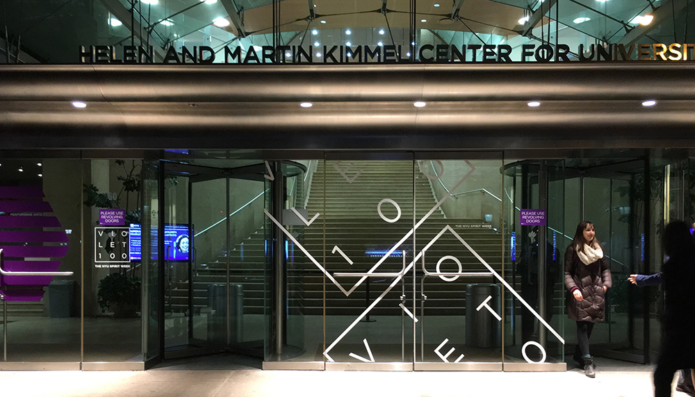
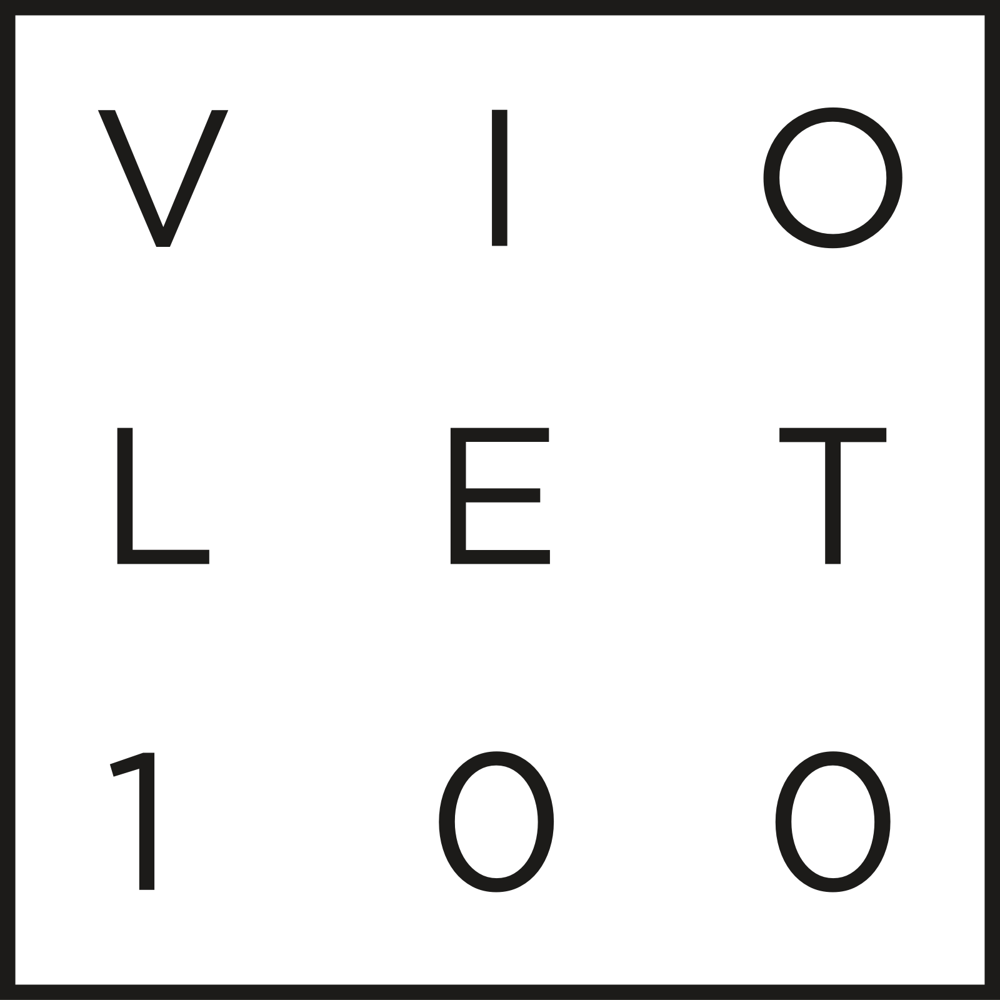
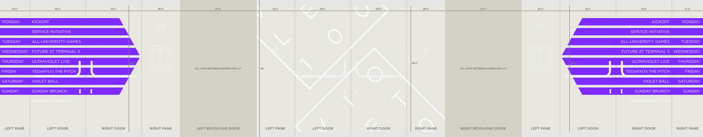
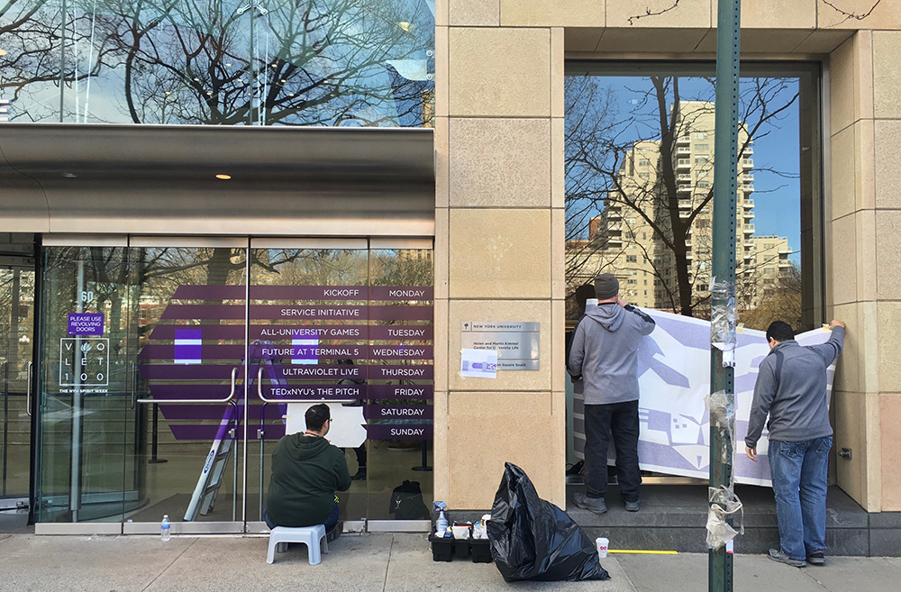
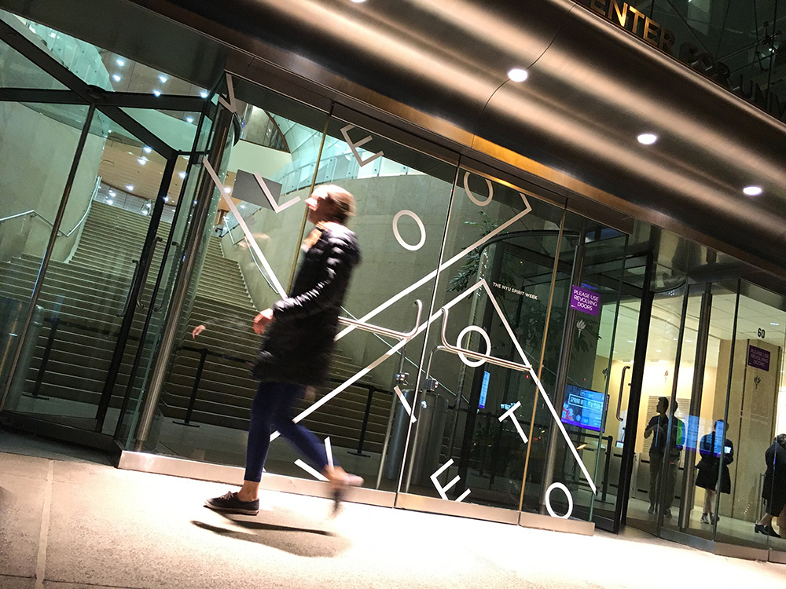
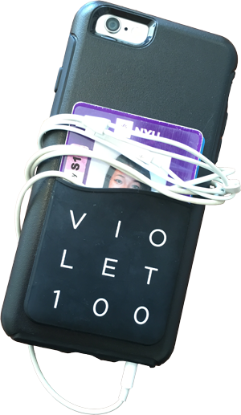

Originally it stood for 100 hours of NYU spirit. Now it is a weeklong celebration of university pride, and students needed to know it was happening.
I developed what become known as the Tic-Tac-Toe identity (though I strongly preferred to call it The Grid), to be used across all promotional material and placed on all flyers for the individual events which Violet 100 comprised.
Then we decided to make a sticker the size of a building.

installation mockup

The install team

the decal’s first night in the wild
But we kept some things small, for scale.
Project managed by Petey Shivery.
Flanking Bobcats by John Belknap.
Designed by Jacob Ford in February 2016.